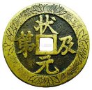
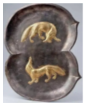
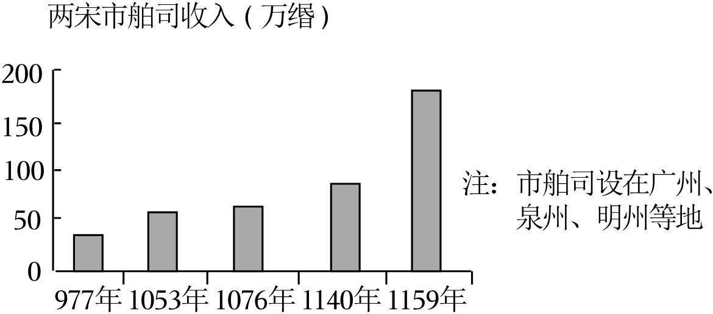

2023年北京市中考历史试卷 · 选择题 第6、7、8、9、10题 · 对应解析
6．（1.5分）某班进行“小钱币，大历史”跨学科主题学习，一位同学推测如图这枚吉语花钱（铸有吉祥词语，不流通）（ ）

A．工匠开始掌握青铜冶炼技术
B．这枚钱币采用圆形方孔形制
C．中央政府统一铸造了五铢钱
D．隋唐时期创立并完善科举制
【分析】本题考查科举制，掌握相关的基础知识。
【解答】图片吉语花钱中的文字是“状元及第”，进士科考中第一名的称为状元，进士科的设立。故D符合题意，不流通）的出现不早于隋唐时期的依据，不流通）的出现不早于隋唐时期的依据。
故选：D。
【点评】本题考查科举制，考查学生的理解和分析能力，解题关键是知道隋唐时期创立并完善科举制可作为吉语花钱（铸有吉祥词语，不流通）的出现不早于隋唐时期的依据。
7．（1.5分）如表两件唐代文物共同反映了当时（ ）
 鎏金双狐纹双桃形银盘，构图方式来自于中亚地区，双狐双桃是中国传统图案 | 鎏金双狮纹银碗，其纹饰既受到萨珊（今伊朗地区）艺术的影响 |
A．政治制度完备B．中外文化交流
C．诗歌创作繁荣D．民族关系和睦
【分析】本题考查唐朝中外文化交流，掌握相关的基础知识。
【解答】据题干“鎏金双狐纹双桃形银盘，构图方式来自于中亚地区，其纹饰既受到萨珊（今伊朗地区）艺术的影响，两件唐代文物都受到外来文化的影响。故B符合题意、诗歌创作繁荣，排除ACD。
故选：B。
【点评】本题考查唐朝中外文化交流，考查学生的理解和分析能力，解题关键是知道两件唐代文物共同反映了当时中外文化交流。
8．（1.5分）如图柱状图说明两宋时期（ ）

A．宰相权力的削弱B．纸币的大量发行
C．海外贸易的发展D．商标广告的出现
【分析】本题主要考查了宋朝的海外贸易与市舶司的设置，解题的关键是正确识读题干图片。
【解答】根据题干图示“两宋市舶司收入”可知，从977年到1159年，图示反映了宋朝时期海外贸易的繁荣发展，成为当时世界上从事海外贸易的重要国家；在主要港口设立市舶司。广州。贸易范围近至朝鲜，远达阿拉伯半岛和非洲东海岸；市舶司收入的图示，排除A，没有提及纸币的发行；题干只是说明宋朝市舶司收入情况，排除D。
故选：C。
【点评】本题主要考查学生综合运用所学知识解决问题的能力。理解并识记宋朝的海外贸易与市舶司的设置。
9．（1.5分）对如图示意图理解正确的是（ ）
A．郑成功从荷兰殖民者手中收复台湾
B．清政府推行垦荒政策，开发西南地区
C．清政府设置伊犁将军，巩固西北边疆
D．中央政府不断加强对台湾的有效管辖
【分析】本题主要考查了元朝和清朝管理台湾地区的措施，掌握相关基础知识。
【解答】元朝在澎湖岛设置了澎湖巡检司，负责管辖澎湖和琉球（今台湾）。1684年，隶属福建省，加强了台湾同祖国内地的联系；1885年。题干图示的这些措施加强了中央政府对台湾的有效管辖；题干反映的是中央政府加强台湾地区管理的措施，排除A，排除B，不是西北边疆。
故选：D。
【点评】本题主要考查学生综合运用所学知识解决问题的能力。理解并识记元朝和清朝管理台湾地区的措施。
10．（1.5分）某班举办中国人民反侵略斗争主题故事会，讲述了戚继光抗倭、义和团廊坊阻击战的故事，在这次活动中还可以讲述的故事有（ ）
①郑和下西洋
②李自成起义
③林则徐虎门销烟
④邓世昌英勇抗敌
A．①②B．②③C．①④D．③④
【分析】本题考查林则徐虎门销烟、甲午中日战争，掌握相关的基础知识。
【解答】“戚继光抗倭、义和团廊坊阻击战”都属于抗击外来侵略、邓世昌英勇抗敌属于抗击外来侵略；郑和下西洋，排除含有①②的ABC。
故选：D。
【点评】本题考查林则徐虎门销烟、甲午中日战争，考查学生的理解和分析能力，解题关键是知道林则徐虎门销烟、邓世昌英勇抗敌属于抗击外来侵略。